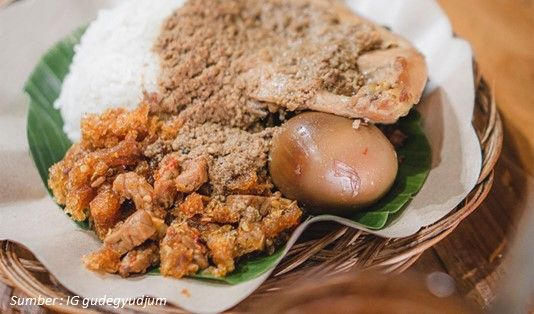
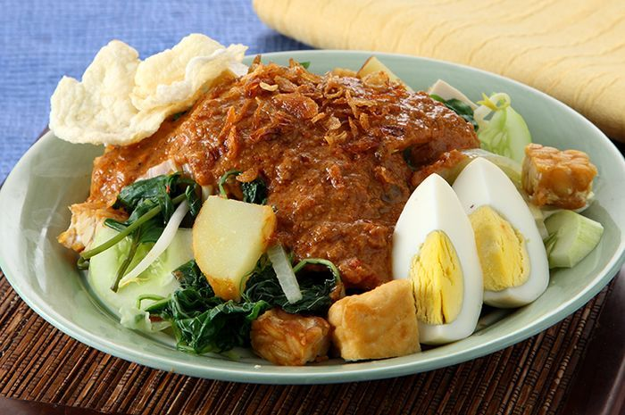

Rendang: Warisan Rasa Minangkabau
Asal: Minangkabau, Sumatera Barat | Tradisi sejak abad ke-16

Rendang (bahasa Minangkabau: randang) adalah lauk pauk berbahan daging yang dimasak perlahan dengan santan dan rempah-rempah khas Minang. Pengolahan lambat (slow-cooking) selama berjam-jam menghasilkan tekstur empuk dan bumbu yang meresap sempurna.
Kata "randang" berasal dari proses “marandang”, yaitu teknik memasak santan hingga kering dan menyatu dengan bumbu. Teknik ini digunakan sejak abad ke-16 untuk membuat makanan tahan lama sebagai bekal para perantau Minangkabau.
Awalnya rendang dibuat dari daging kerbau, namun lambat laun daging sapi menjadi bahan utama karena lebih empuk dan mudah diperoleh. Bumbu rempahnya meliputi cabai, serai, lengkuas, jahe, kunyit, bawang merah, bawang putih, dan daun jeruk.
Dalam adat Minangkabau, rendang sering disajikan pada upacara adat, pernikahan, kenduri, dan hari raya, sebagai simbol kehormatan dan kebersamaan keluarga. Karena proses memasaknya yang lama, rendang bisa tahan berminggu-minggu dalam suhu ruang.
Secara internasional, rendang diakui sebagai makanan terenak di dunia — menempati peringkat pertama dalam daftar *World’s 50 Best Foods* versi CNN pada tahun 2011 dan 2017. Rendang juga populer di kawasan Asia Tenggara seperti Malaysia, Singapura, dan Brunei.
Pengaruh budaya India dari pedagang Gujarat di abad ke-14 turut memperkaya penggunaan bumbu dalam rendang, menjadikannya lebih kompleks dan bercita rasa dalam.
“Rendang bukan hanya soal rasa, tapi tentang cerita yang diturunkan dari satu generasi ke generasi berikutnya.”
← Kembali ke Cerita di Balik RasaFilosofi Gudeg: Simbol Kesabaran dan Kebersamaan
Asal: Yogyakarta, Jawa Tengah | Warisan sejak zaman Mataram Islam
Gudeg adalah masakan khas Yogyakarta yang terbuat dari nangka muda (gori) yang dimasak dalam waktu lama dengan santan dan rempah-rempah khas Jawa. Rasa manisnya yang khas serta aroma daun jati yang digunakan sebagai pewarna alami menjadikan gudeg sebagai ikon kuliner kota Yogyakarta.
Di balik rasa manis yang unik, tersimpan nilai filosofi mendalam. Proses memasak gudeg membutuhkan waktu hingga 6 jam atau lebih, menggambarkan nilai kesabaran, ketekunan, dan kasih sayang dalam tradisi Jawa. Gudeg tidak bisa dimasak tergesa-gesa — ia butuh perhatian penuh, seperti halnya membangun hubungan dalam keluarga dan masyarakat.
Gudeg pertama kali dikenal sejak zaman Kesultanan Mataram dan terus berkembang menjadi simbol identitas Yogyakarta. Selain nangka muda, gudeg biasanya disajikan bersama sambal krecek, telur pindang, ayam kampung, dan areh (kuah santan kental), yang masing-masing punya makna tersendiri dalam konsep keseimbangan rasa dan warna dalam budaya Jawa.
Nama "gudeg" diduga berasal dari bunyi "digodhog" (direbus) — karena proses utama dalam memasaknya adalah merebus nangka muda dalam waktu lama hingga menghitam dan mengental.
Filosofi gudeg juga erat dengan konsep “alon-alon asal kelakon”, yang berarti melakukan sesuatu dengan tenang dan sabar akan menghasilkan sesuatu yang baik dan bermakna. Gudeg tidak hanya menyatukan rasa, tetapi juga menyatukan keluarga dan komunitas di setiap kesempatan makan bersama.
“Di setiap sendok gudeg, ada pelajaran tentang ketekunan, tradisi, dan manisnya kebersamaan.”
← Kembali ke Cerita di Balik RasaNasi Bali: Harmoni Rasa dalam Piring
Asal: Bali | Warisan budaya kuliner masyarakat Hindu Bali
Nasi Bali adalah sajian khas Pulau Dewata yang mencerminkan filosofi keseimbangan dan spiritualitas masyarakat Hindu Bali. Dalam seporsi nasi Bali, terdapat kombinasi lauk pauk dengan rasa pedas dan gurih yang menggugah selera, seperti ayam betutu, sate lilit, lawar, sambal matah, dan telur pindang.
Makanan ini bukan sekadar santapan sehari-hari, tetapi juga menjadi bagian dari persembahan dalam upacara adat dan ritual keagamaan. Nasi putih dalam hidangan ini melambangkan kesucian, sementara lauk pauknya melambangkan unsur alam — api, air, udara, dan tanah — dalam ajaran Tri Hita Karana yang mengedepankan harmoni antara manusia, alam, dan Sang Hyang Widhi (Tuhan).
Komposisi rasa dalam nasi Bali mencerminkan karakter masyarakat Bali yang kuat dalam menjaga tradisi, penuh semangat, dan menghargai keseimbangan hidup. Tidak jarang, sajian ini dibuat dengan menggunakan bahan-bahan lokal dari pekarangan sendiri, seperti daun singkong, kelapa parut, dan rempah-rempah Bali yang aromatik.
Salah satu lauk yang paling terkenal dalam nasi Bali adalah ayam betutu — ayam utuh yang dimasak perlahan dengan bumbu lengkap khas Bali yang disebut base genep. Proses memasaknya bisa memakan waktu berjam-jam untuk menghasilkan tekstur yang empuk dan rasa yang meresap.
Dalam konteks modern, nasi Bali banyak ditemukan di warung makan lokal maupun restoran kelas atas. Namun rasa autentiknya tetap dijaga dengan resep warisan keluarga yang diturunkan dari generasi ke generasi.
“Nasi Bali bukan sekadar makanan — ia adalah refleksi keseimbangan, kepercayaan, dan kecintaan terhadap alam dan budaya.”
← Kembali ke Cerita di Balik RasaRawon: Kegelapan yang Memikat
Asal: Jawa Timur | Sejak zaman Kerajaan Mataram Kuno
Rawon adalah sup daging berkuah hitam khas Jawa Timur, yang dikenal karena warna dan cita rasa khasnya yang berasal dari biji kluwek. Warna gelap pekat kuahnya mungkin terlihat asing bagi sebagian orang, tapi justru menjadi daya tarik utama kuliner ini.
Kluwek atau kepayang memberikan rasa khas pahit-manis yang menyatu dengan kaldu daging sapi yang kaya. Dalam proses memasaknya, daging sapi direbus dengan bumbu halus seperti bawang merah, bawang putih, ketumbar, serai, daun jeruk, lengkuas, dan terasi.
Rawon sering disajikan dengan nasi putih, tauge pendek, sambal, kerupuk udang, dan telur asin. Hidangan ini bukan hanya makanan, tapi bagian dari tradisi kuliner keluarga di Jawa Timur dan bahkan menjadi bagian dari sajian acara resmi atau pernikahan.
Filosofi rawon mencerminkan keberanian dan rasa percaya diri — bahwa rasa yang kuat dan penampilan yang berbeda justru punya tempat istimewa dalam budaya Indonesia.
"Di balik gelapnya kuah rawon, tersembunyi kekayaan rasa dan kisah tradisi yang telah mengakar sejak berabad lalu."
← Kembali ke Cerita di Balik RasaCoto Makassar: Kehangatan dari Tanah Bugis
Asal: Makassar, Sulawesi Selatan | Tradisi sejak abad ke-16
Coto Makassar adalah sup khas Makassar yang terbuat dari jeroan dan daging sapi yang direbus dalam waktu lama bersama racikan bumbu rempah khas Sulawesi. Hidangan ini kaya rasa dan sering disantap bersama ketupat atau buras.
Bumbu coto menggunakan bawang putih, kemiri, lengkuas, jahe, dan ketumbar yang ditumis dan dicampur dengan kaldu sapi, serta diberi tambahan kacang tanah yang dihaluskan — memberikan tekstur gurih dan aroma yang dalam.
Dalam budaya Bugis, coto Makassar bukan sekadar makanan, tapi juga simbol keramahan dan solidaritas sosial. Ia biasa hadir dalam acara kumpul keluarga, perayaan, dan sebagai jamuan kehormatan bagi tamu.
Hangat, pekat, dan menyatu dengan cita rasa daerah — Coto Makassar adalah bukti betapa kentalnya identitas kuliner Bugis yang kaya akan nilai kekeluargaan.
"Coto bukan hanya mengisi perut, tapi juga menghangatkan hati dan menyatukan pertemanan."
← Kembali ke Cerita di Balik RasaSoto Medan: Perpaduan Budaya dalam Mangkuk
Asal: Medan, Sumatera Utara | Cerminan budaya multietnis kota Medan
Soto Medan adalah varian soto khas Sumatera Utara yang memiliki kuah santan kental berwarna kuning kehijauan. Aromanya wangi dan rasanya gurih, hasil perpaduan rempah seperti kunyit, serai, daun jeruk, dan kemiri.
Isiannya bisa berupa ayam, daging sapi, atau udang, lengkap dengan kentang goreng, telur rebus, tauge, dan emping. Soto Medan biasanya disajikan dengan nasi putih dan sambal cabai rawit.
Hidangan ini mencerminkan keberagaman budaya masyarakat Medan — kota yang dihuni oleh beragam etnis seperti Batak, Melayu, Tionghoa, Minang, dan Jawa. Rasa sotonya pun seolah menjadi hasil kompromi rasa antarbudaya yang harmonis.
Soto Medan bukan hanya kuliner harian, tapi juga kerap disajikan saat acara keluarga, buka puasa, hingga hajatan. Kehangatan kuahnya seolah menyambut setiap orang yang mencicipinya.
"Dalam semangkuk Soto Medan, tersaji lebih dari rasa — ada cerita tentang keberagaman yang menyatu."
← Kembali ke Cerita di Balik RasaSate: Tusukan Rasa Nusantara
Asal: Nusantara (beragam daerah) | Sejak masa awal penyebaran Islam di Indonesia

Sate adalah salah satu ikon kuliner Indonesia yang dikenal luas baik di dalam maupun luar negeri. Hidangan ini terdiri dari potongan daging kecil yang ditusuk menggunakan bambu, lalu dibakar dan disajikan dengan aneka saus atau sambal sesuai daerah asalnya.
Di berbagai daerah di Indonesia, sate memiliki ciri khasnya sendiri. Sate Ayam Madura terkenal dengan bumbu kacangnya yang kental dan manis gurih, disajikan dengan lontong dan kecap manis. Sementara itu, Sate Padang hadir dengan kuah kental berwarna kuning atau merah berbumbu kuat khas Minang.
Dari Bali, ada Sate Lilit yang dibuat dari daging cincang yang dicampur kelapa parut, bumbu base genep, lalu dililitkan pada batang serai. Sedangkan di Kalimantan, Sate Banjar hadir dengan cita rasa gurih dan manis, serta disajikan bersama sambal kacang encer.
Bukan hanya dari daging ayam atau sapi, sate juga hadir dalam bentuk lain seperti sate kambing, sate kelinci, sate kerang, hingga sate jamur. Keberagaman bahan dan bumbu yang digunakan mencerminkan kekayaan budaya dan bahan pangan lokal setiap daerah.
Sate tidak hanya menjadi makanan harian, tetapi juga sering hadir dalam acara-acara penting seperti pernikahan, selamatan, hingga perayaan nasional. Aromanya yang khas saat dibakar di atas arang menjadi bagian dari pengalaman kuliner yang tak tergantikan.
“Dalam setiap tusukan sate, terbenam cerita rasa dari penjuru Nusantara.”
← Kembali ke Cerita di Balik RasaKerupuk: Cemilan Tradisional yang Tak Terpisahkan
Asal: Seluruh Indonesia | Digemari sejak masa kolonial

Kerupuk adalah cemilan renyah yang telah menjadi bagian tak terpisahkan dari kuliner Indonesia. Disajikan sebagai pelengkap nasi goreng, soto, gado-gado, atau hanya sebagai camilan sore, kerupuk menyumbang suara dan tekstur yang khas dalam setiap sajian.
Ada banyak jenis kerupuk di Indonesia: kerupuk udang dengan rasa gurih laut, kerupuk jangek dari kulit sapi khas Minang, kerupuk bawang yang ringan dan harum, hingga kerupuk kampung yang digoreng menggunakan pasir panas.
Di beberapa daerah, kerupuk juga dibuat dari singkong, ikan, atau nasi. Kerupuk ikan tenggiri dari Palembang atau kerupuk gendar dari Jawa menjadi contoh betapa lokalitas memengaruhi cita rasa dan bentuk kerupuk.
Pembuatan kerupuk sering melibatkan proses fermentasi dan pengeringan di bawah sinar matahari, lalu digoreng dengan minyak panas hingga mekar. Di balik renyahnya, kerupuk menyimpan nilai tradisi dan kreativitas kuliner rumahan.
"Kerupuk adalah suara dari dapur Indonesia — sederhana, meriah, dan mengikat kenangan."
← Kembali ke Cerita di Balik RasaNasi Tumpeng: Simbol Syukur dan Persatuan
Asal: Jawa | Tradisi sejak masa Hindu-Buddha

Tumpeng adalah sajian nasi berbentuk kerucut yang dilengkapi dengan berbagai lauk pauk seperti ayam goreng, telur, urap, tempe, tahu, dan sambal. Nasi kuning sering digunakan untuk melambangkan kekayaan dan kemakmuran.
Dalam budaya Jawa, tumpeng melambangkan hubungan manusia dengan Tuhan (puncak kerucut), sesama manusia (lingkaran lauk di sekitarnya), dan alam (warna dan bahan makanan). Tumpeng biasa disajikan saat syukuran, kelahiran, atau peringatan penting.
Bentuk kerucutnya terinspirasi dari gunung, yang dalam kepercayaan kuno dianggap sebagai tempat tinggal para dewa. Tumpeng juga merupakan simbol keseimbangan dan harapan atas masa depan yang lebih baik.
Saat ini, tumpeng telah menjadi simbol persatuan dan syukur lintas budaya di Indonesia. Ia diadaptasi dalam berbagai bentuk dan acara, namun makna filosofisnya tetap hidup di hati masyarakat.
"Tumpeng bukan sekadar makanan, melainkan perwujudan rasa syukur yang mendalam."
← Kembali ke Cerita di Balik RasaGado-gado: Salad Tradisional Indonesia
Asal: Jawa (terutama Betawi & Sunda) | Populer sejak awal abad ke-20
Gado-gado adalah salad khas Indonesia yang terdiri dari aneka sayuran rebus seperti kangkung, tauge, kol, kacang panjang, dan kentang, disajikan dengan lontong atau nasi, lalu disiram dengan saus kacang yang gurih dan sedikit manis.
Nama "gado-gado" berasal dari kata "gado" yang berarti makan tanpa nasi. Hidangan ini mencerminkan kebiasaan masyarakat urban Betawi yang ingin makanan sehat, cepat, dan sederhana, namun tetap mengenyangkan.
Keunikan gado-gado terletak pada saus kacangnya. Biasanya dibuat dari kacang tanah goreng, bawang putih, cabai, gula merah, dan air asam jawa — menghasilkan rasa yang kaya dan kompleks. Beberapa daerah juga menambahkan kerupuk dan emping sebagai pelengkap.
Gado-gado sering dianggap sebagai bentuk awal dari "salad tropis", tapi dengan karakter rasa yang jauh lebih bold. Ini membuktikan bahwa kuliner Indonesia juga punya hidangan sehat yang tak kalah lezat dari salad modern.
"Gado-gado adalah pelukan hangat dari tanah ibu — sederhana, penuh warna, dan sarat makna."
← Kembali ke Cerita di Balik Rasa